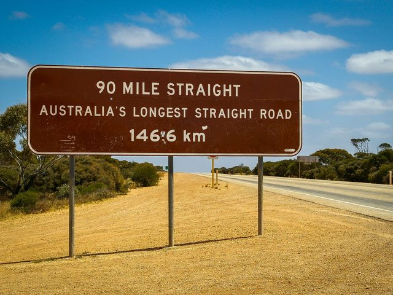
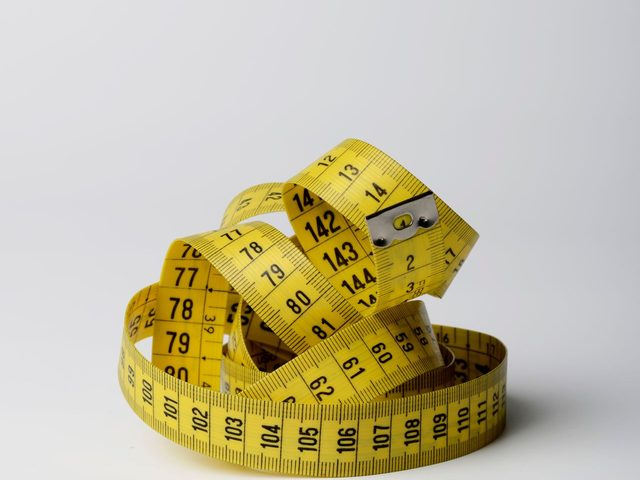
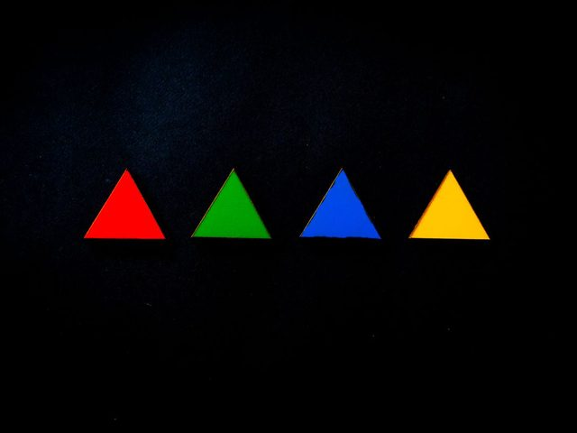
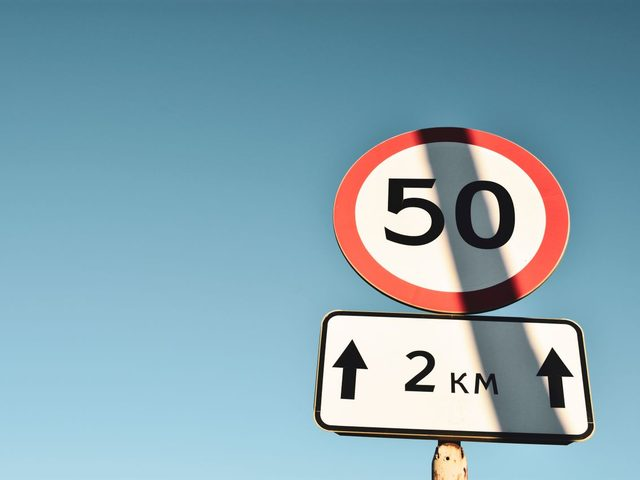

VOCABULARY · 主題 2000 字 PART 2 UNIT 19
Sizes & measurements．尺寸與測量
長度、容量單位、形狀、加減、大小、距離和重量，共 17 個。loaf 的複數是 loaves。
共 17 個單字．點 🔊 聽發音

1kilometern.
公里
km；1 kilometer = 1,000 meters
My school is two kilometers from my home.我的學校離家兩公里。
2litern.
公升
L；英式拼 litre
Drink about two liters of water a day.每天喝大約兩公升的水。

3metern.
公尺
m；1 meter = 100 centimeters
He is almost two meters tall.他快兩公尺高了。

4rectanglen.
長方形
rectangular 長方形的
A door is shaped like a rectangle.門的形狀是長方形。

5trianglen.
三角形
tri- 三
A triangle has three sides.三角形有三個邊。
6distantadj.
遙遠的
distance 距離 → distant
We could hear distant thunder.我們聽見遠處的雷聲。
7extraadj.
額外的；多餘的
extra money 額外的錢
Bring an extra pair of socks.多帶一雙襪子。

8maximumadj. / n.
最大的；最大量
↔ minimum 最小量
The maximum speed here is 50 kilometers per hour.這裡最高速限每小時 50 公里。
9minusprep.
減
↔ plus
Ten minus four is six.十減四等於六。
10narrowadj.
狹窄的
↔ wide 寬的
The street is too narrow for buses.這條街太窄，公車開不進來。
11plusprep.
加
↔ minus
Two plus three is five.二加三等於五。

12tinyadj.
極小的
tinier → tiniest
The ant is tiny, but it's very strong.螞蟻很小，但很強壯。

13loafn.
（一條）麵包
複數 loaves；a loaf of bread
Mom bought two loaves of bread.媽媽買了兩條麵包。

14distancen.
距離
in the distance 在遠處
What's the distance from Taipei to Taichung?台北到台中的距離有多遠？
15weightn.
重量；體重
weigh 秤重 → weight
Check the weight of your suitcase before the flight.搭機前先量一下行李的重量。

16amountn.
數量；總額
a large amount of + 不可數名詞
He drinks a large amount of water every day.他每天喝大量的水。
17measurev. / n.
測量；措施
measurement 測量
Measure the table before you buy a tablecloth.買桌巾前先量一下桌子。
FOCUS
單位
| 單位 | 縮寫 | 換算 |
|---|---|---|
| meter | m | 100 centimeters |
| kilometer | km | 1,000 meters |
| liter | L | 1,000 milliliters |
FOCUS
加減怎麼說
| 算式 | 英文 |
|---|---|
| 2 + 3 = 5 | Two plus three is five. |
| 10 − 4 = 6 | Ten minus four is six. |
loaf → loaves（f 變 v 加 -es），和 leaf → leaves、knife → knives 一樣。